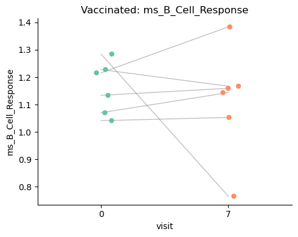
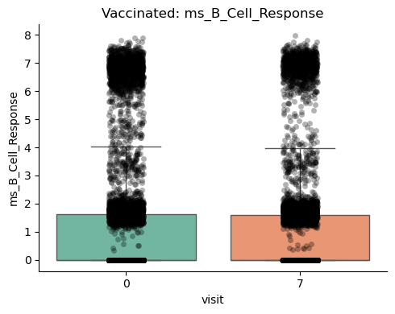

[1]:
import warnings
warnings.filterwarnings('ignore')
import pandas as pd
import numpy as np
import matplotlib.pyplot as plt
import scanpy as sc
import sctrial as st
pd.options.mode.chained_assignment = None
Example: Vaccine Response Analysis (GSE171964)
Dataset: BNT162b2 vaccination time course (GEO GSE171964)
Background: This notebook analyzes a real single-cell PBMC dataset collected across multiple post-vaccination days.
Data Source: GEO GSE171964 (barcodes, features, counts matrix, and phenotype metadata).
1. Load Actual Data
[2]:
from pathlib import Path
import gzip
from scipy.io import mmread
def _resolve_dir_with_files(p: str, required_files) -> Path:
path = Path(p)
if path.is_absolute():
if all((path / f).exists() for f in required_files):
return path
for base in [Path.cwd(), *Path.cwd().parents]:
cand = base / path
if all((cand / f).exists() for f in required_files):
return cand
return path
def load_vaccine_example_data(
data_dir="data/vaccine_gse171964",
processed_name="vaccine_gse171964_day0_day7.h5ad",
max_participants=30,
max_cells_per_group=200,
seed=42,
):
data_dir = _resolve_dir_with_files(
data_dir,
[
"GSE171964_barcodes_v2.tsv.gz",
"GSE171964_feats_v2.tsv.gz",
"GSE171964_geo_pheno_v2.csv.gz",
"GSE171964_countsmatrix_v2.mtx.gz",
],
)
processed_path = data_dir.parent / "processed" / processed_name
if processed_path.exists():
adata = sc.read_h5ad(processed_path)
print(f"Loaded processed vaccine dataset (GSE171964): {adata.n_obs} cells, {adata.n_vars} genes")
print("Processed file:", processed_path)
print("Days:", adata.obs["day"].unique())
print("Participants:", adata.obs["pt_id"].nunique())
print("Cell types:", adata.obs["clustnm"].nunique())
return adata
barcodes_path = data_dir / "GSE171964_barcodes_v2.tsv.gz"
feats_path = data_dir / "GSE171964_feats_v2.tsv.gz"
pheno_path = data_dir / "GSE171964_geo_pheno_v2.csv.gz"
mtx_path = data_dir / "GSE171964_countsmatrix_v2.mtx.gz"
for p in [barcodes_path, feats_path, pheno_path, mtx_path]:
if not p.exists():
raise FileNotFoundError(f"Missing file: {p}")
# Load barcodes and features
barcodes = (
pd.read_csv(barcodes_path, sep="\s+", header=None, engine="python", skiprows=1)[1]
.astype(str)
.str.strip('"')
.tolist()
)
features = (
pd.read_csv(feats_path, sep="\s+", header=None, engine="python", skiprows=1)[1]
.astype(str)
.str.strip('"')
.tolist()
)
# Load count matrix
with gzip.open(mtx_path, "rb") as f:
X = mmread(f).tocsr()
# Ensure shape is cells x genes
if X.shape[0] == len(features) and X.shape[1] == len(barcodes):
X = X.T
elif X.shape[0] == len(barcodes) and X.shape[1] == len(features):
pass
else:
raise ValueError("Matrix dimensions do not match barcodes/features.")
adata = sc.AnnData(X=X)
adata.obs_names = barcodes
adata.var_names = features
# Add phenotype metadata
pheno = pd.read_csv(pheno_path)
pheno["barcode"] = pheno["barcode"].astype(str)
pheno = pheno.set_index("barcode")
pheno = pheno.loc[adata.obs_names]
adata.obs = pheno
# Keep baseline and day 7 for a paired vaccine response
adata = adata[adata.obs["day"].isin([0, 7])].copy()
# Keep paired participants and cap participants
paired = adata.obs.groupby("pt_id")["day"].nunique()
keep_ids = paired[paired >= 2].index
adata = adata[adata.obs["pt_id"].isin(keep_ids)].copy()
rng = np.random.default_rng(seed)
uniq_ids = adata.obs["pt_id"].unique()
n = min(len(uniq_ids), max_participants)
sel = rng.choice(uniq_ids, size=n, replace=False)
adata = adata[adata.obs["pt_id"].isin(sel)].copy()
# Cap cells per participant/day/celltype
if max_cells_per_group is not None:
grp = ["pt_id", "day", "clustnm"]
sampled = (
adata.obs.groupby(grp, observed=True, group_keys=False)
.apply(lambda x: x.sample(min(len(x), max_cells_per_group), random_state=seed))
)
adata = adata[sampled.index].copy()
# Add counts layer
adata.layers["counts"] = adata.X.copy()
processed_path.parent.mkdir(parents=True, exist_ok=True)
adata.write_h5ad(processed_path)
print("Saved processed file:", processed_path)
print(f"Loaded vaccine dataset (GSE171964): {adata.n_obs} cells, {adata.n_vars} genes")
print("Days:", adata.obs["day"].unique())
print("Participants:", adata.obs["pt_id"].nunique())
print("Cell types:", adata.obs["clustnm"].nunique())
return adata
adata = load_vaccine_example_data()
Loaded processed vaccine dataset (GSE171964): 21331 cells, 20102 genes
Processed file: /Users/omarm/Documents/Research/projects/sc-trialdiff/data/processed/vaccine_gse171964_day0_day7.h5ad
Days: [0 7]
Participants: 6
Cell types: 18
2. Analysis
[3]:
available = set(adata.var_names)
adata = st.add_log1p_cpm_layer(adata, counts_layer="counts", out_layer="log1p_cpm")
gene_sets = {
"B_Cell_Response": [g for g in ["CD79A", "CD79B", "MS4A1"] if g in available],
"IFN_Signature": [g for g in ["ISG15", "IFI6", "MX1"] if g in available],
"Inflammatory": [g for g in ["S100A8", "S100A9", "LYZ"] if g in available]
}
gene_sets = {k: v for k, v in gene_sets.items() if len(v) >= 3}
if gene_sets:
adata = st.score_gene_sets(adata, gene_sets, layer="log1p_cpm", method="mean", prefix="ms_")
else:
print("No gene sets matched this dataset; skipping module scoring.")
# Standardize metadata for trial analysis
adata.obs["visit"] = adata.obs["day"].astype(str)
adata.obs["participant_id"] = adata.obs["pt_id"].astype(str)
adata.obs["arm"] = "Vaccinated"
adata.obs["cell_type"] = adata.obs["clustnm"].astype(str)
design = st.TrialDesign(
participant_col="participant_id",
visit_col="visit",
arm_col="arm",
arm_treated="Vaccinated",
arm_control="Vaccinated",
celltype_col="cell_type",
)
features = [c for c in adata.obs.columns if c.startswith("ms_")]
paired = adata.obs.groupby("participant_id")["visit"].nunique()
n_paired = int((paired >= 2).sum())
print(f"Paired participants (0 vs 7): {n_paired}")
if not features:
print("No module scores available; skipping within-arm analysis.")
elif n_paired < 4:
print("Within-arm analysis requires at least 4 paired participants; skipping.")
else:
# Within-arm comparison (participant_visit)
res = st.within_arm_comparison(
adata,
arm="Vaccinated",
features=features,
design=design,
visits=("0", "7"),
aggregate="participant_visit",
standardize=True,
)
print("Within-arm (participant_visit, standardized):")
if not res.empty:
display(res.set_index("feature"))
# Within-arm comparison (cell-level, raw)
res_cell = st.within_arm_comparison(
adata,
arm="Vaccinated",
features=features,
design=design,
visits=("0", "7"),
aggregate="cell",
standardize=False,
)
print("Within-arm (cell-level, raw):")
if not res_cell.empty:
display(res_cell.set_index("feature"))
# Plots (single-arm, so skip multi-arm interaction)
fig, ax = plt.subplots(1, 1, figsize=(5, 4))
st.plot_within_arm_comparison(
adata,
arm="Vaccinated",
feature=features[0],
design=design,
visits=("0", "7"),
plot_type="paired",
ax=ax,
)
plt.tight_layout(); plt.show()
fig, ax = plt.subplots(1, 1, figsize=(5, 4))
st.plot_within_arm_comparison(
adata,
arm="Vaccinated",
feature=features[0],
design=design,
visits=("0", "7"),
plot_type="box",
ax=ax,
)
plt.tight_layout(); plt.show()
Paired participants (0 vs 7): 6
Within-arm (participant_visit, standardized):
| beta_time | p_time | n_units | FDR_time | |
|---|---|---|---|---|
| feature | ||||
| ms_B_Cell_Response | -0.328167 | 0.731723 | 6 | 0.958162 |
| ms_IFN_Signature | 0.745510 | 0.199715 | 6 | 0.599144 |
| ms_Inflammatory | -0.055257 | 0.958162 | 6 | 0.958162 |
Within-arm (cell-level, raw):
| beta_time | p_time | n_units | FDR_time | |
|---|---|---|---|---|
| feature | ||||
| ms_B_Cell_Response | -0.072536 | 0.437051 | 6 | 0.437051 |
| ms_IFN_Signature | 0.195660 | 0.000012 | 6 | 0.000036 |
| ms_Inflammatory | -0.659615 | 0.097073 | 6 | 0.145610 |

